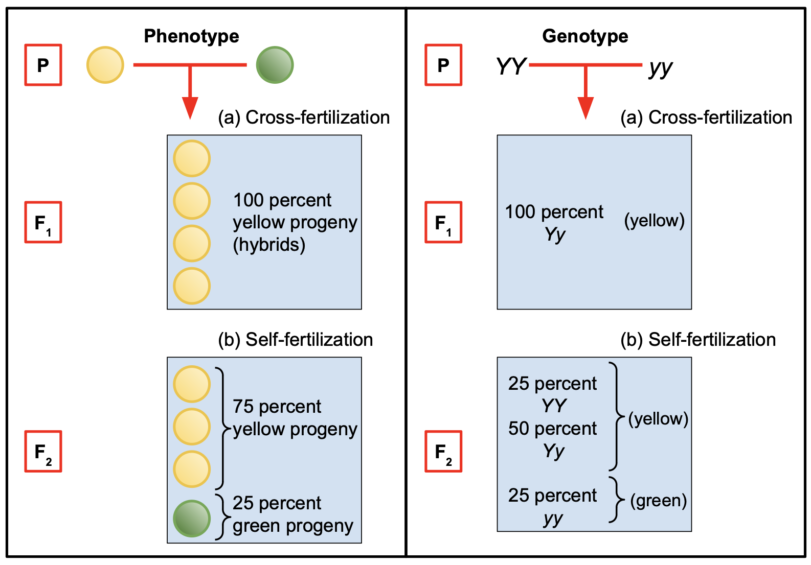
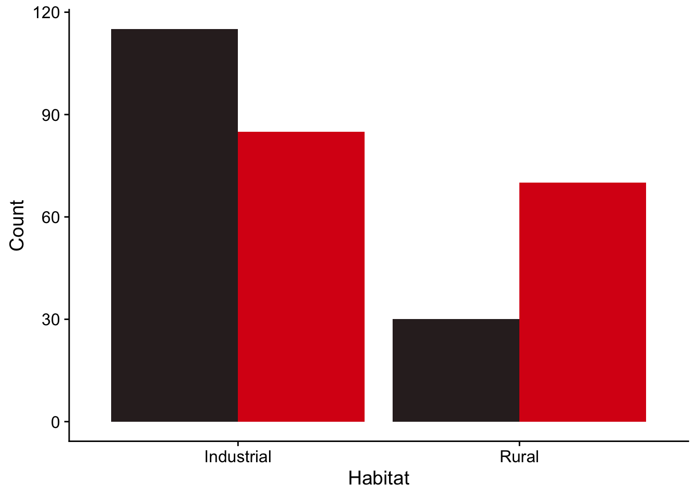

10 Chi-squared analysis of count data
A chi-square analysis is used when our data are in the form of raw counts for two or more categorical groups eg pea plants with either yellow peas or green peas, survival rate of mice if they took drug A or took drug B, etc. Each independent observation must definitely belong to either one group or the other, and there are no replicates. That is, for each category we just have one count.
What we do is compare the counts we got to some expected value according either to chance or to some prior theory.
For example:
If we were tossing a fair coin 1000 times we would expect 500 heads and 500 tails, ie heads and tails in the proportion 1:1. In reality, if the coin were fair, we would probably get roughly the same number of heads and tails, but not exactly 500 of each. How far from 50:50 would the proportion of heads and tails have to be before we would be justified in rejecting the idea that the coin is fair?
If we threw a fair dice a large number of times we would expect each possible score, from 1 to 6, to occur the same number of times. ie each score would occur 1/6th of the time. In reality we would probably get each score roughly 1/6 of the time, but not exactly 1/6. How far from the expected proportions could the numbers of each score get before we would be justified in thinking that the dice was not fair?
If the basic idea of Mendelian inheritance with independent assortment involving a single gene is correct, then we would expect that if we crossed a large number of pea plants that were heterozygous for yellow and green pea colour, with yellow being dominant, then the offspring would have yellow:green peas in the ratio 3:1 (plants with genotypes YY, Yy, yY would all have yellow seeds and only those with yy would have green seeds). In practice, if the inheritance were according to the simplest type of Mendelian inheritance (ie involving just one gene, amongst other things) we would probably get yellow:green offspring in a ratio that was approximately but not exactly 3:1. How far from 3:1 would the ratio need to be before we would justified in claiming that the outcome was inconsistent with the Mendelian prediction?
10.1 Chi-square goodness of fit test
In a chi-square ‘goodness of fit’ test, we are testing data where we have a number of counts for each of two or more possible outcomes of some procedure (heads/tails, dice scores etc). We have an idea of how these counts should be distributed under some null hypothesis (the coin is fair, the dice is fair, genetic inheritance works in this or that way etc). The chi-square goodness of fit test tests how likely it is we would have got the counts we actually got if that null hypothesis were correct. We are testing how well our actual counts ‘fit’ the expected values.
In a typical software implementation of the test, such as in R, we give it the counts we actually got for each possible outcome and also the expected proportion for each outcome. The test then gives us a p-value, a probability, for how likely it is that we would have got the counts we actually got, or counts even further from the null hypothesis, if that null hypothesis were correct. If this p-value is too small, and by that we usually mean less than 0.05, then we reject the null hypothesis.
10.1.1 Example
Suppose we have crossed pea plants that were all heterozygous for yellow/green pea colour. In the F1 generation we get 176 offspring , of which 130 were yellow and 46 were green.
The data here are raw counts, and an individual pea plant offspring contributes either to the yellow count or to the green count, but not to both.
Our expected counts of yellow and green are found by simply dividing the total count of offspring, 176, in the ratio 3:1, giving us an expected 132 yellow pea plants and an expected 44 green pea plants in the offspring F1 generation.
10.1.2 Doing the chi-square test in R
What we do in R is use the chisq.test() function to see how likely it is we would have got counts of 130 and 46 if the null hypothesis, with its expected counts in the ratio 3:1, were true.
We do it like this:
chisq.test(c(130,46),p=c(0.75,0.25))
There are two arguments. The first is the counts we got, which we enter as a ‘vector’ c(z,y,....), so we write c(130,46). The second is a vector of the proportions we expect for the two counts, where these proportions should add up to one. So for our expected 3:1 ratio we enter c(0.75,0.25).
Let’s do it: type the above function into the console window (bottom left). You will get an output something like this:
Chi-squared test for given probabilities
data: c(130, 46)
X-squared = 0.12121, df = 1, p-value = 0.7277This output is typical of tests done in R. We get the ‘test statistic’ whose name varies depending on the test. Here it is called X-squared, pronounced chi-squared. This is a number that the test calculates, based on the data you have given it. For the most part, we don’t need to worry about how it does that. Then there is the p-value, which is the probability of getting this test statistic if the null hypothesis were true.
In this case, we see that the p-value is 0.73, which is large. We could very plausibly have got yellow:green numbers of 130 and 46 if the null hypothesis were true, so we cannot reject that null hypothesis. In other words, our data are consistent at the 5% significance level with the predictions of simple Mendelian inheritance.
10.1.3 Reporting the result in English
In English, we might report this result as:
We found counts of 130 yellow plants and 46 green plants, which are consistent at the 5% significance level with the predictions of Mendelian inheritance (chi-squared test, X-squared = 0.12, p=0.73).
Note that we do not say we have proved Mendelian inheritance to be correct. We haven’t. We never prove things in science. We haven’t said anything about the truth of the null hypothesis. All we can say is whether our data are or are not consistent with the null hypothesis. In this case they are. We then report the test we used and the values of the test statistic and p-value. Other tests might give you other details to report too.
10.1.4 Exercises
Exercise 1
Suppose you tossed a fair coin 100 times and got 45 heads and 55 tails.
- Under a null hypothesis that the coin is fair, what would the expected numbers of heads and tails be?
You use R to do a chi-square test of that null hypothesis. Here is the code to do that and the output it would give:
chisq.test(c(45,55),p=c(0.5,0.5)) # we could leave out the second argument here
Chi-squared test for given probabilities
data: c(45, 55)
X-squared = 1, df = 1, p-value = 0.3173What do you conclude?
How would you report the result?
Exercise 2
Suppose someone told you that the competence of scientists was linked to their astrological zodiac sign. I won’t name all of these, but there are twelve of them: Pisces, Scorpio, Cancer etc. To test this hypothesis, you spend a lot of time on Primo and identify 240 scientists, currently active, that have each published at least five papers in high impact journals in the last year. All of these people, you presume, are successful scientists. You write to each of them and ask them their date of birth. Amazingly(!), all of them respond. You then assign each of them to a zodiac sign according to their birth date and get the following counts for each sign:
In this code chunk we have typed out the counts and collected them as a vector, using the function `c()`. we have saved this under the name stars.
stars<-c(22,20,17,22,20,19,18,21,19,22,23,17)- What would be a suitable null hypothesis in this investigation?
- What proportion of the total count would we expect for each star sign if this null were true?
- The data meet the criteria required for use of a chi-square goodness of fit test. How can we tell?
- Use the
chisq.test()function to implement this test. - On the basis of the output of the test, do you reject the null hypothesis?
- Report the result of the test in plain English.
10.1.5 Solutions
Solution 1
The expectation is that half the outcomes would be heads and half would be tails.
The null hypothesis of this test is that heads and tails are equally likely, ie that the coin is fair. Under this null hypothesis the expected outcome is 50 heads and 50 tails. From the output of the R code we see that the p-value, the probability of getting an outcome as far or further from that, is 0.317. That is pretty high. Would you do anything if you knew that the probability of a bad (or worse) outcome was 0.317? In particular, this p-value is greater than 0.05, so we cannot reject the null hypothesis that the coin is fair. That is, even with a fair coin it is not at all unlikely that you would get head/tail numbers as different from 50/50 as 45/55 if you tossed the coin 100 times. That will happen about 1/3 of the time if you repeatedly do trials where you toss the coin 100 times.
To report this result, you might say something like
From 100 coin tosses we got 45 heads and 55 tails. These counts are consistent at the 5% significance level with the coin being fair (chi-squared test, X-squared = 1, p=0.317).
Solution 2
- H0: There is no association between the astrological star sign of a researcher and their success in science (who knew?)
- One twelfth for each sign ie a researcher is as likely to have one star sign as any other.
- These are count data, there are at least five counts for every sign and the counts are independent - any individual researcher only contributes to one of the twelve counts.
- Note that we do not need to include the second
p=...argument in this case since the default presumption, that all proportions are equal, is true here.
chisq.test(stars)
Chi-squared test for given probabilities
data: stars
X-squared = 2.3, df = 11, p-value = 0.9971- We see that the p-value is almost one so we emphatically do not reject the null hypothesis.
- We find no evidence that star sign affects success in science (X-sq=2.29, df = 11, p=0.997)
Note the degrees of freedom that is reported: df = 11. The degrees of freedom is the number of independent pieces of information. Here, given that we know the total number of researchers, only eleven of the individual counts are independent. Once they are known, the twelfth can be calculated.
10.2 Two-way Chi square analysis: test of independence
Adapted from Chapter 5: Beckerman, Childs and Petchey: Getting Started with R
- For R code to implement this section, scroll down to the next section *
A common scenario where we have with count data is that there are two explanatory factors each with two or more levels that enable us to classify the data. This can happen when something is either true or not true, and a test for for this truth gives either a positive or a negative result. We might want to know if the test to determine truth was any better than flipping a coin: is there some association between what the truth is (eg I do or do not have a disease) and what the test says about that (testing positive or negative for the disease). In this example our data would be counts of people in each of four categories: have the disease / test positive, have the disease / test negative, do not have the disease / test positive and do not have the disease / test negative.
10.2.1 Example - red and black ladybirds
We are going to analyse a scenario of this type to see if there is evidence for an association between two factors. Suppose we have some count data of ladybirds found in both an industrial and a rural location. In each location, some of the ladybirds are red and some are black. We would like to test for whether there is an association between the ladybird colour and its location. If there isn’t then we would expect the proportion of black to red ladybirds to be roughly the same in both habitats. If there is, then we would expect the proportions to be different, meaning that knowing the habitat would tell us something about the likelihood of a ladybird found there being black or red. That is way of saying that the colour of the ladybirds would not be independent of the location.
Behind this the research purpose might be to investigate whether matching of morphological colour of the ladybirds to the prevalent colour of the environment confers an evolutionary advantage. If it does then we would expect there to be an association between morphological colour and environment so that the proportion of black to red ladybirds would be higher in a grimy industrial setting than in it would be in a rural setting.
A Chi-Square contingency analysis can be used to investigate this. This type of analysis is used when you have
- Count data - for example, how many red ladybirds in a rural setting, how many in an industrial setting, how many black ladydbirds in each of the settings?
- Enough count data - typically at least 5 individuals for each combination of the levels in question, which would be rural/red, rural/black, industrial/red and industrial/black in this case.
- Independent counts - each ladybird contributes to only one sub-total. For example, if it is red and found in a rural location, then it contributes to the count of red ladybirds found in a rural location, and not to any other sub-total, such as black ladybirds found in a rural location.
10.2.1.1 Hypotheses
What do you think a suitable hypothesis should be for this investigation, and what would the corresponding null hypothesis be?
- The null hypotheses could be: H0: There is no association between habitat and ladybird colour. This means that whatever the proportion is of black to red ladybirds, it is the same in both habitats.
- The alternate hypothesis could be: H1: There is an association between habitat and ladybird colour.
# Load packages we need
library(tidyverse)
library(here)
library(cowplot) # this makes your plots look nicer
library(kableExtra)
theme_set(theme_cowplot()) # this sets the cowplot theme to be the default theme for any plots we make..# Import the data
filepath<-here("data","ladybirds_morph_colour.csv")
lady<-read_csv(filepath)
#glimpse(lady)10.2.1.2 The data
The data consist of counts of the number of ladybirds of each colour that were observed in 5 rural sites and 5 industrial sites. These data are in tidy form, with one variable per column. There are 20 rows, with each row containing the count of either red or black ladybirds found at a given site.
# A tibble: 20 × 4
Habitat Site morph_colour number
<chr> <chr> <chr> <dbl>
1 Rural R1 black 10
2 Rural R2 black 3
3 Rural R3 black 4
4 Rural R4 black 7
5 Rural R5 black 6
6 Rural R1 red 15
7 Rural R2 red 18
8 Rural R3 red 9
9 Rural R4 red 12
10 Rural R5 red 16
11 Industrial U1 black 32
12 Industrial U2 black 25
13 Industrial U3 black 25
14 Industrial U4 black 17
15 Industrial U5 black 16
16 Industrial U1 red 17
17 Industrial U2 red 23
18 Industrial U3 red 21
19 Industrial U4 red 9
20 Industrial U5 red 15The total counts for red and black ladybirds observed in industrial and rural settings are shown below:
# Calculate the totals of each colour in each habitat.
totals<- lady |>
group_by(Habitat,morph_colour) |>
summarise (total.number = sum(number))
# totals |>
# kbl() |>
# kable_styling(full_width=FALSE)
totals# A tibble: 4 × 3
# Groups: Habitat [2]
Habitat morph_colour total.number
<chr> <chr> <dbl>
1 Industrial black 115
2 Industrial red 85
3 Rural black 30
4 Rural red 7010.2.1.3 Plot the data.
From these totals we can create a bar chart:
# plot the data, with sensible colours
totals |>
ggplot(aes(x = Habitat,y = total.number,fill=morph_colour))+
geom_col(position='dodge') +
labs(x="Habitat",
y="Count",
fill= "Colour") +
scale_fill_manual(values=c(black='#312626',red='#da1717')) + # this line manually sets the fill colours for us
theme(legend.position="none")
10.2.1.4 Interpret the graph before we do any ‘stats’
Look at the plot - does it look as though the proportion of black to red ladybirds is the same in the two habitats? Do you expect to retain or to reject the null hypothesis, which says that there is no association between habitat and ladybird colour, and hence that the proportions are the same?
A chi-square test of independence will enable us to determine how likely it is that we would have got proportions of black to red as different as or more different than they actually are if the null hypothesis were true.
10.2.1.5 The Chi-square test
To do the chi square test, it helps to set out our count data as a 2 x 2 table of total counts:
lady.mat<-xtabs(number~Habitat + morph_colour, data=lady)
lady.mat morph_colour
Habitat black red
Industrial 115 85
Rural 30 70This kind of table is sometimes called a contingency table.
When we give these numbers to some statistical software such as R and ask it to carry out a ‘chi-square test’ it will use the data to calculate a ‘test statistic’ \(X^2\) by comparing the actual counts of the ladybirds in the table above with their expected counts under the null hypothesis. The further the actual counts are from their expected values, on the whole, the bigger this test statistic will be. For the gory (they are not that gory!) details on how this is done, see section 4 below but do note that, while these are interesting, if you find that kind of thing interesting, as I do, you do not need to be familiar with them to be able to apply a chi-square test. What you do need to know is when it is OK to use one, and when it is not, as is true for any statistical test.
We’ll turn to that issue now:
Providing a number of conditions are met by the data (principally, that they are count data, that all the cell values are greater than or equal to about five and that they are all independent ie any ladybird contributes to the count of only one cell), this test statistic \(X^2\) has a so-called ‘chi-squared’ distribution. This is a known mathematical distribution, which makes it possible to calculate the probability that the statistic would be as big as it is, or bigger, if the null hypothesis were true. We call this probability the p-value.
This is generally how statistical tests work. They take your data and use it in a carefully chosen way to calculate some number that in general is called a test statistic but which is referred to by different names when calculated for particular tests. How it is calculated depends on the test and these days we never have to manually do the calculations ourselves. That’s taken care of by software like R. Providing the data meet certain criteria, the statistic will typically have a known probability distribution. This means that the probability that it will exceed a given value if the null hypothesis is true can be calculated. This probability is the p-value. If the p-value is very small, and by that we typically mean less than 0.05 or 0.01, then we can reject the null hypothesis.
When we run a chi-square test in R on the data in the table above it gives us this as output:
chisq.test(lady.mat)
Pearson's Chi-squared test with Yates' continuity correction
data: lady.mat
X-squared = 19.103, df = 1, p-value = 1.239e-0510.2.1.6 Conclusion
Study the output of the chi-square test. Note that you are given a test-statistic (here called Chi-squared/X-squared) and a number of degrees of freedom (df) (in some tests you are given more than one of these). This is the number of independent pieces of information used to calculate the test statistic. Lastly, you are a given a p-value. This is the probability that you would have got a chi-squared value as big or bigger than the one you got if the null hypothesis were true. Here the null hypothesis is that there is no association between ladybird colour and location. Put another way, it is, roughly speaking the probability of getting the data you actually got if the null hypothesis were true.
Here, the p-value is much less than 0.05, so we can safely reject the null hypothesis. The ladybird colour does not appear to be independent of the setting.
An appropriate way to report these data would be:
‘Ladybird colour morphs are not equally common in the two habitats (Chi-sq =19.3, df = 1, p<0.001)’
10.2.1.7 Yates continuity correction
This is mentioned is the output of the test. What does it mean? It adjusts for the fact that our data are discrete and the chi-square distribution that we are using to calculate the p-values is continuous. That’s it.
10.2.2 R script
file_url <- "https://raw.githubusercontent.com/mbh038/r4nqy/refs/heads/main/chi-square-test-of-independence-template.qmd"
download.file(file_url,"chisq_independence_template.qmd")10.2.2.1 Preliminaries
- Create an R notebook called
ladybirdsand save it in the scripts folder within your R project folder on your machine. You will find that it is saved asladybirds.Rmd. Leave theyamlbit at the top, between the pairs of lines with three dashes (or maybe add your name and the date), then delete everything else. - Save the data file “ladybirds_morph_colour.csv” to the data folder in your R project folder, if is not already there.
- Make sure that your Project folder is actually what RStudio recognises as a “project”. You can navigate to and around it in the Files tab in the bottom right-hand pane of RStudio. If all is good you will see a
.Rproj file at the top level of the project, and will apear at the top right of the RStudio window. If you don’t see this, time now to turn your folder into a project!
Read the rest of this section and copy the code in the chunks provided into chunks in your notebook. If you are lucky, your tutor will have provided a template notebook for you! If you are not so lucky, remember that each code chunk neeeds to be between two lines of three back ticks, like this:
### A suitable heading
```{r}
# enter your code here
```so that your notebook will end up looking something like this:
---
title: " my R notebook"
date: "the date"
author: " your name"
---
### Load packages
```{r}
library(tidyverse)
librrary(here)
library(cowplot)
```
### Load data
```{r}
# enter your code here
```
### Summarise data
```{r}
# enter your code here
```
and so on...On some Windows machines, a shortcut to getting the back ticks around each code chunk is to type Ctrl-Alt-I. Annoyingly, this does not seem to work on all Windows machines. If that is the case for you, you will have to type them in manually. On Macs, the shortcut is option-Cmd-I.
Note that the code provided below is not the only way to do what we want here. You are encouraged to play with it. For example, if you want to see what a particular line does, you can ‘comment it out’ by putting a # at the begining of the line, then running that line again. What difference does it make?
10.2.2.2 Load packages we need
library(tidyverse)
library(here)
library(cowplot) # this makes your plots look nicer10.2.2.3 Import the data and inspect it
filepath<-here("data","ladybirds_morph_colour.csv")
lady<-read_csv(filepath) # read the data int an object (in this case, a data frame) called lady
glimpse(lady) # inspect it.Rows: 20
Columns: 4
$ Habitat <chr> "Rural", "Rural", "Rural", "Rural", "Rural", "Rural", "Ru…
$ Site <chr> "R1", "R2", "R3", "R4", "R5", "R1", "R2", "R3", "R4", "R5…
$ morph_colour <chr> "black", "black", "black", "black", "black", "red", "red"…
$ number <dbl> 10, 3, 4, 7, 6, 15, 18, 9, 12, 16, 32, 25, 25, 17, 16, 17…Are those sensible names for the variables? Is the data tidy?
10.2.2.4 Calculate the totals of each colour in each habitat.
We will save these totals into a new data frame called totals
totals<- lady |>
group_by(Habitat,morph_colour) |>
summarise (total.number = sum(number))
totals# A tibble: 4 × 3
# Groups: Habitat [2]
Habitat morph_colour total.number
<chr> <chr> <dbl>
1 Industrial black 115
2 Industrial red 85
3 Rural black 30
4 Rural red 70Now that we have these totals we use them to plot a bar chart of the data, using geom_col() withinggplot:
10.2.2.5 Plot the data
totals |>
ggplot(aes(x = Habitat,y = total.number,fill=morph_colour))+
geom_col(position='dodge') +
labs(x="Habitat",
y="Count",
fill= "Colour") +
theme_cowplot() # try leaving out this line (but if you do, leave out the final '+' in the line above). What happens?
10.2.2.6 Fix the colours
The fill colours we got in the figure above are defaults from R, which does not realise that a factor of interest for us is the actual colour of the ladybirds. We would like the figure to reflect that, so let us make the bars red and black for red and black ladybirds respectively.
# plot the data, with sensible colours
totals |>
ggplot(aes(x = Habitat,y = total.number,fill=morph_colour))+
geom_col(position='dodge') +
labs(x="Habitat",
y="Count",
fill= "Colour") +
scale_fill_manual(values=c(black='#312626',red='#da1717')) + # this line manually sets the fill colours for us
theme_cowplot() +
theme(legend.position="none") # this line removes the legend, since we no longer need it
10.2.2.7 Interpret the graph before we do any ‘stats’
Look at the plot - given these sample data, does it seem plausible that the proportions among the populations of black ladybirds and red ladybirdsare the same in both industrial and rural settings, or not? Do you expect to retain or to reject the null hypothesis?
10.2.2.8 Making the contingency table from the data
Preparation
We will use the function chisq.test() to carry out the chi square test. However, this requires a matrix of the total counts and our data is in one column of a data frame, spread over 20 rows, one count per colour per site. We need to convert this data frame into a 2x2 matrix of the total counts of each colour in each setting. We can use the xtabs() function to do this.
lady.mat<-xtabs(number~Habitat + morph_colour, data=lady)
lady.mat morph_colour
Habitat black red
Industrial 115 85
Rural 30 70A matrix of this type is sometimes called a contingency table.
10.2.2.9 The actual Chi-square test
Let’s do it…
chisq.test(lady.mat)
Pearson's Chi-squared test with Yates' continuity correction
data: lady.mat
X-squared = 19.103, df = 1, p-value = 1.239e-0510.2.2.10 Conclusion
Study the output of the chi-square test. Note that you are given a test-statistic (here called Chi-squared/X-squared), a number of degrees of freedom (df) (in some tests you are given more than one of these). This is the number of independent pieces of information used to calculate the test statistic. Lastly, you are a given a p-value. This is the probability that you would have got a chi-squared value as big or bigger than the one you got if the null hypothesis were true, where here the null hypothesis is that there is no association between ladybird colour and location. Put another way, the p-value is, roughly speaking, the probability of getting the data you got or more extreme data if the null hypothesis were true.
If the p-value is small (by which we usually mean less than 0.05) then we rejectthe null hypothesis.
You are also told that this test was done with Yates’ continuity correction. All this means is that an adjustment has been made for the fact that our data are discrete and the chi-square distribution that we are using to calculate the p-values is continuous. That’s it. Thank you, R, for doing this, but we don’t need to worry about it.
10.2.2.11 Reporting the result
Select which of the two following statements would be an appropriate way to report these data, and fill in the missing values.
10.2.2.12 Option 1
‘Ladybird colour morphs are not equally common in the two habitats (Chi-sq =19.3, df = 1, p<0.001)’
10.2.2.13 Option 2
‘We find insufficient evidence to reject the null hypothesis that Ladybird colour morphs are equally distributed in the two habitats (Chi-sq =, df = , p = )’
10.2.3 Exercises
10.2.3.1 Exercise One
A researcher investigates whether two species A and B are associated with one another. If one is present at a site, does the other tend to be present, and if one is absent, does the other tend to be absent?. If the species were not associated with one another, then the presence of one would say nothing about the likely presence or absence of the other. Their occurrences would be independent.
The researcher goes to 100 sites and finds the following:
| What was found | Number |
|---|---|
| A present, B present | 33. |
| A present, B absent | 28. |
| B present, A absent | 12. |
| A absent, B absent | 27. |
They enter these into a 2 x 2 contingency table in R, as follows:
AB <- matrix(c(33,28,12,27),nrow = 2)
AB # R calls this a matrix - we will refer to it as a table. [,1] [,2]
[1,] 33 12
[2,] 28 27Think about what each row and column in this table represents: as we have constructed it, columns relate to A and rows relate to B. The left hand column gives counts of sites where A was present, the right hand column gives counts where it was absent. The top row gives gives counts of sites where B was present, the bottom row gives counts of sites where it was absent.
- Create this table yourself
- Is it valid here to use a chi square test for an association between species A and species B?
- Suppose the answer to 2. is ‘Yes’, Use the table to determine whether there is evidence for an association between species A and species B.
- What conclusion woud you reach if all four counts in the table were the same?
- What conclusion would you reach if neither species was ever seen in the absence of the other - meaning that the off-diagonal elements of the table would be zero?
10.2.4 Solutions
10.2.4.1 Exercise One
Yes, because the data are in the form of counts, each count is independent of the others and no count is less than 5.
We use the matrix AB as the argument for
chisq.test().
chisq.test(AB)
Pearson's Chi-squared test with Yates' continuity correction
data: AB
X-squared = 4.3312, df = 1, p-value = 0.03742We find p < 0.05, so we reject the null hypothesis of no association and can say that there is evidence, at the 5% significance level, that species A and B are associated.
- Let us create a new matrix, AB_uniform, with all values equal to 25:
AB_uniform <- matrix(c(25,25,25,25),nrow = 2)
AB_uniform [,1] [,2]
[1,] 25 25
[2,] 25 25chisq.test(AB_uniform)
Pearson's Chi-squared test
data: AB_uniform
X-squared = 0, df = 1, p-value = 1Here , p = 1: there is no evidence from these data that species A and B are associated.
- Now we create a matrix wih both off-diagonal elements equal to zero
AB_diagonal <- matrix(c(25,0,0,25),nrow = 2)
AB_diagonal [,1] [,2]
[1,] 25 0
[2,] 0 25chisq.test(AB_diagonal)
Pearson's Chi-squared test with Yates' continuity correction
data: AB_diagonal
X-squared = 46.08, df = 1, p-value = 1.135e-11In this case p<0.001. Hence the test tells us that in this case there is evidence that species A and B are strongly associated.
10.3 The Chi-Square Test explained (optional)
You can skip this section if you are not interested in how the chi-square test works. If you are, read on.
Let’s recall the number of sightings of each colour of ladybird in each habitat:
lady.mat morph_colour
Habitat black red
Industrial 115 85
Rural 30 70If there were no association between colour and habitat, then we would expect the relative proportions of colour to be independent of habitat. That is they should be the same in both rural and industrial habitats. Looking at the table above we see that two thirds (200 out of 300) of all sightings, regardless of colour, were in an industrial habitat. Hence we would expect that two thirds of all 145 black sightings would be in an industrial habitat. We thus arrive at an ‘expected’ number for sightings of black ladybirds in an industrial habitat to be \((200/300) \times 145 = 96.7\). Similarly, we would expect one third (100 out of 300) of all 155 red sightings to be in a rural habitat, giving an ‘expected’ number for this combination of levels to be \((100/300)\times 155 = 51.7\). More generally, the expected number in an any cell of the table, under the null hypothesis of no association between the two factors is given by
\[\text{expected number}=\frac{\text{row total}\times\text{column total}}{\text{grand total}}\] Using this method, these are the four expected numbers for each combination of levels of the two factors we have:
[,1] [,2]
[1,] 96.67 103.33
[2,] 48.33 51.67To get a measurement of how far the actual table numbers are from their expected values we can, for each cell, square the difference between the expected and actual values, then divide the result by the expected value, and finally sum the four results that we get. This has the effect of giving equal weight to positive or negative deviations of the observed values from the expected values, and scales each squared deviation so that all four have equal weight in the final sum. The result is the chi-squared test statistic:
\[ \begin{align*} X^2&=\sum_{i=1}^4\frac{(O_i-E_i)^2}{E_i}\\ &=\frac{(115-96.67)^2}{96.67} + \frac{(85-103.33)^2}{103.33} + \frac{(30-48.33)^2}{48.33} + \frac{(70-51.67)^2}{51.67}\\ &=20.189 \end{align*} \] Yates continuity correction (digression)
You may have noticed that the \(X^2 = 20.189\) value calculated above is slightly larger than the value calculated by the chisq.test() function, which found \(X^2 = 19.096\). This is because the function uses Yates’ continuity correction. This was suggested by Yates in 1934 to correct for the fact that the \(X^2\) statistic we calculate is actually discrete (because we have categorical data) whereas the chi-square distribution is continuous. This means that the value we calculate tends to be too big so that our p-values are too small. The problem is most apparent where we have small numbers and one degree of freedom, which is what you have in a \(2 \times 2\) contigency table such s in the example above. Yates’ fix is quite simple: just amend the \(X^2\) statistic to the following:
\[ X^2=\sum_{i=1}^4\frac{(\lvert O_i-E_i \rvert - 0.5)^2}{E_i} \]
where the vertical lines mean ‘take the absolute value of’, so that |85-103.33| = |-18.33| = 18.33
This gives us
\[
\begin{align*}
X^2&=\sum_{i=1}^4\frac{(\lvert O_i-E_i \rvert - 0.5)^2}{E_i}\\
&=\frac{(|115-96.67|-0.5)^2}{96.67} + \frac{(|85-103.33|-0.5)^2}{103.33} + \frac{(|30-48.33|-0.5)^2}{48.33} + \frac{(|70-51.67|-0.5)^2}{51.67}\\
&=19.096
\end{align*}
\] which is exactly what the chisq.test() function gives.
Under a null hypothesis of no association between habitat and colour all the counts would be the ‘expected’ values, and \(X^2\) would be zero. The further away from these values the actual results are, the bigger \(X^2\) will be and the more likely it is that we can reject the null. For a sufficiently large value of \(X^2\) we will reject the null. To sum up, in general we will reject the null when \(X^2\) is large, and fail to reject it when it is small.
But how large is large enough to reject the null?
To answer this we use the fact that the sampling distribution of \(X^2\) is a chi-squared distribution with (in this case) \((2-1) \times (2-1) = 1\) degrees of freedom. The sampling distribution is the distribution you would get if you were to repeat the study multiple times, each time calculating the \(X^2\) statistic from the four counts of black/red, industrial/rural. Each time you would get a slightly different value of \(X^2\). The spread of those hypothetical values is what we call the sampling distribution. Providing none of the cell values in the tables are too samll (see below) it turns out that this distribution has a known mathematical form, known as a chi-square distribution.
The p-value given in a chi-square test is the probability of getting a chi-squared statistic \(X^2\) as big as or bigger than the one you actually got. This is the area under the chi-squared distribution with the appropriate number of degrees of freedom to the right of the test-statistic value \(X^2\).
xsquared<-19.1
ggplot(data.frame(x = c(0,20)), aes(x = x)) +
stat_function(fun = dchisq, args = list(df = 1)) +
stat_function(fun = dchisq, args = list(df = 1), xlim = c(xsquared, 20),
geom = "area", fill = "#84CA72", alpha = .2) +
scale_x_continuous(name = "", breaks = seq(0, 20,2)) +
geom_vline(xintercept=xsquared,linewidth=0.2,colour="gray80") +
theme_cowplot()
10.3.0.1 Why does the test statistic have this distribution?
To answer this, let us recognise that in our observed contingency table, where we have N observations altogether, we can think of there being a probability \(P_i\) that any individual observation will end up in cell i, with the actual observed frequency in that cell, \(O_i\) being the product of this probability and the total number of observations: \(O_i = P_i\times N\). If we repeated the study again and again we would get slightly different numbers in each cell each time. The distribution of the numbers in a particular cell would follow similar rules as that of the number of heads we might get each time if we tossed a coin N times, then did the same again and again. This distribution is called a binomial distribution.
In other words, our observed frequencies have been obtained by sampling from a binomial distribution, where \(O_i \sim \text{Binomial}(P_i,N)\). Now, providing N is large enough and providing too that the probabilities \(P_i\) are not too close to 0 or 1, then the binomial distribution resembles a normal distribution. Thus, providing \(P_i\times N\), that is providing the observed frequencies \(O_i=P_i\times N\) are large enough, then the \(O_i\) will be approximately normally distributed.If this is the case, then so too is \(\frac{(O_i-E_i)}{\sqrt{E_i}}\) since the expected values \(E_i\) are fixed quantities and all this transformation does is turn our normal distribution into a standard normal distribution, with mean = 0 and standard deviation = 1. ie it shifts and squishes the distribution.
Hence in our expression for our test statistic \(X^2\) what we are doing is adding up k (= 4 in this case) squared standard normal distributions. This is the definition of a chi-squared distribution with four degrees of freedom. Thus we see that the sampling distribution of our test statistic is a chi-squared distribution.
The one final slightly odd detail is that when we run a chi-square test for a 2 x 2 contingency table we are told that there is one degree of freedom. In general, for \(m \times n\) table, there will be \((m-1)\times(n-1)\) degrees of freedom. This is because the test presumes that the row and column total are already known. If that is the case then if one value of a 2x2 table is known, the other 3 values can be found by deduction. Hence there only one value (it doesn’t matter which one) can be chosen freely.